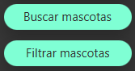

Para poder modificar a un animal primero debes abrir el menú que se encuentra en la parte superior izquierda.

Una vez abierto, puedes escoger tanto la opción de "Filtrar mascotas" como la opción de "Buscar mascotas"
Lo pasos para modificar a una mascota desde filtrar son exactamente los mismo que desde buscar.
Lo primero es seleccionar a la mascota a la que quieres modificar.

Una vez seleccionada, pinche sobre el botón "Modificar mascota".
Se te abrirá una pestaña con toda la información de esa mascota. Cambia los datos necesarios y pincha de nuevo sobre el botón "Modificar mascota" para guardar todos los cambios hechos.